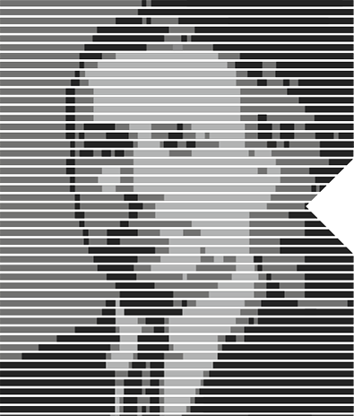

Институт развития
высших психических функций
им. Л.С. Выготского

к альтернативному решению психологических проблем

Наша миссия — предоставить научно обоснованную и эффективную альтернативу как традиционной системе ментального здоровья, так и ненадежным эзотерическим методам “волшебного мышления”.

Мы помогаем людям развивать высшие психические функции, и тем самым управлять своим психологическим благополучием без зависимости от неэффективных ригидных медицинских моделей и недоказанных эзотерических практик.

Наш фокус прост: то, что работает, то, что доказано, и то, что действительно помогает людям взять под контроль своё ментальное и эмоциональное благополучие.
Вы уже поняли, что методы мейнстрим-психологии для вас не работают, и вам нужно реальное решение. Вы не хотите бесконечно разбираться в диагнозах, слышать пустые советы или полагаться на таблетки. Вам важно понять, что происходит, и найти рабочий подход.
Эта индивидуальная сессия — ваш первый шаг к ясности и действиям:
Мы разберём вашу ситуацию: ваши цели, сложности и то, что вам мешает.
Определим ключевые высшие психические функции: какие из них нужно развивать, чтобы выйти из тупика.
Создадим персонализированную стратегию: конкретный план действий, основанный на научных методах.
Вы получите документ с чётким разбором вашей проблемы и понятным подходом к её решению.
Мы не будем вас мучать странными вопросами, копаться в прошлом или вешать ярлыки. Мы даём практическую систему, которая позволяет использовать ресурсы вашего сознания по максимуму.
как предмет исследований Института
Важно понимать, что существуют клинические состояния, при которых развитие и корректировка высших психических функций невозможны или требуют специального подхода. В таких случаях мы настоятельно рекомендуем обратиться за помощью к соответствующим специалистам и работать над развитием ВПФ на фоне необходимой терапии.
Индивидуальная работа
Наши индивидуальные сессии предназначены для тех, кто ищет практический, структурированный и научно обоснованный подход к психологическому благополучию, решению своих проблем и достижению целей.
Если вы сомневаетесь в эффективности мейнстрим-психологии, хотите избежать зависимости от препаратов или ищете способы повысить когнитивные способности, мы поможем вам развить высшие психические функции (ВПФ), необходимые для ясности ума, саморегуляции, достижения целей и общего качества жизни.
Программы для детей и родителей
Для родителей, которые не хотят необоснованно давать своим детям психотропные препараты и ищут реальные, научно обоснованные альтернативы, мы предлагаем программы развития, которые помогут детям успешно учиться и развиваться.
Наш подход укрепляет когнитивные способности, такие как внимание, память, учебные навыки и эмоциональная регуляция — без диагнозов, ярлыков и ненужных вмешательств.